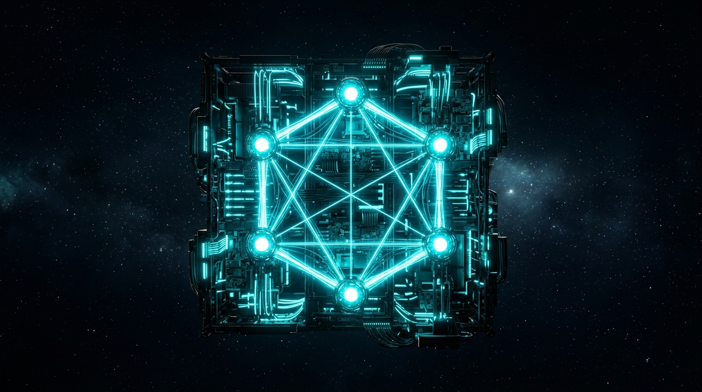
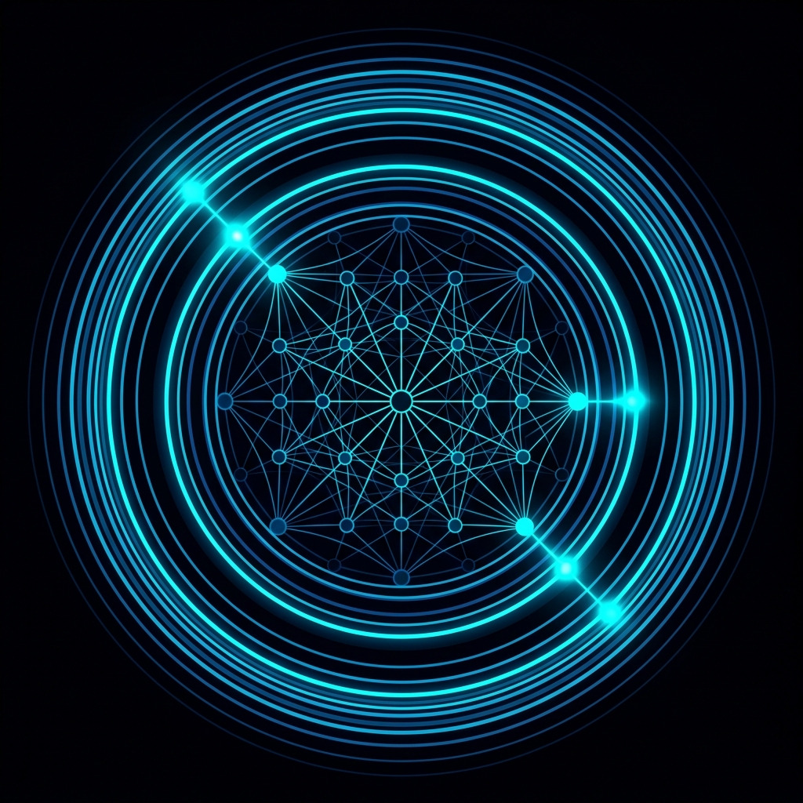
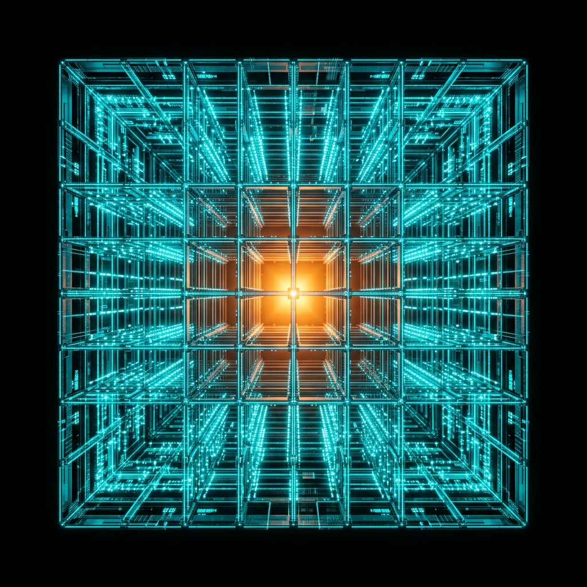
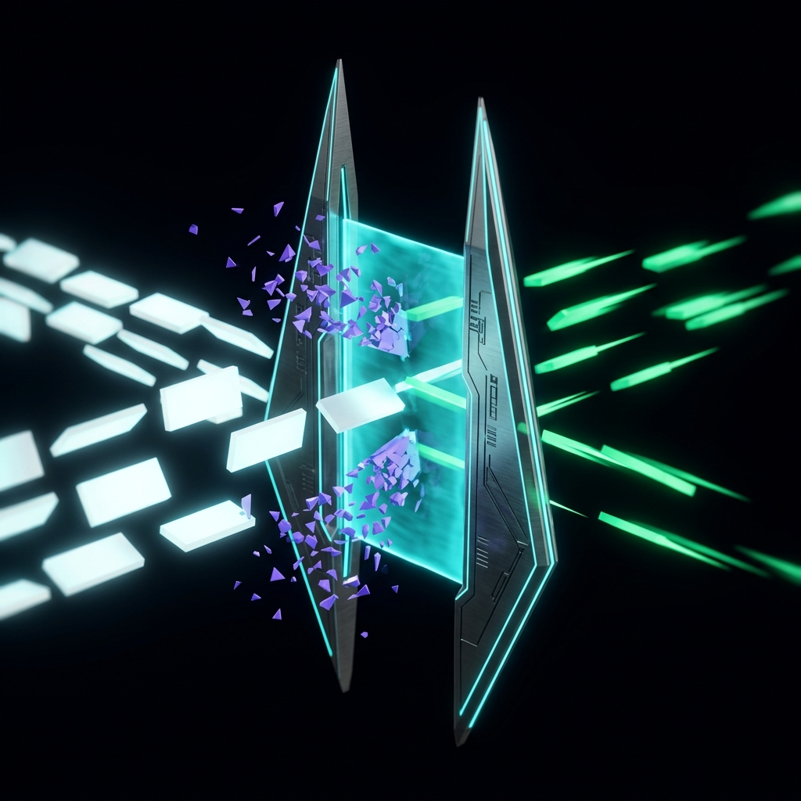
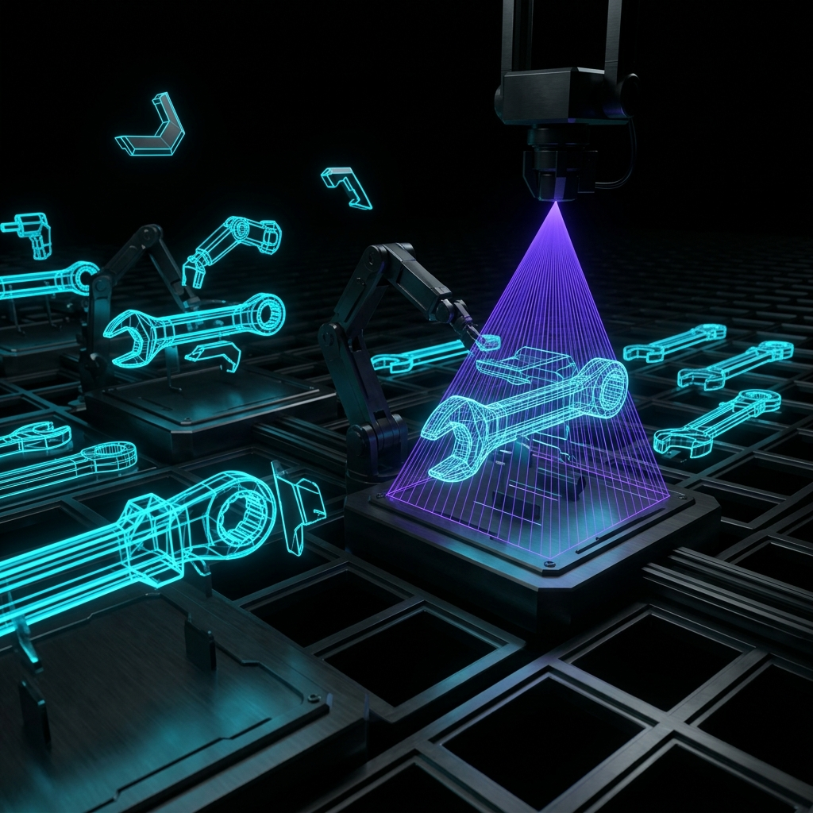
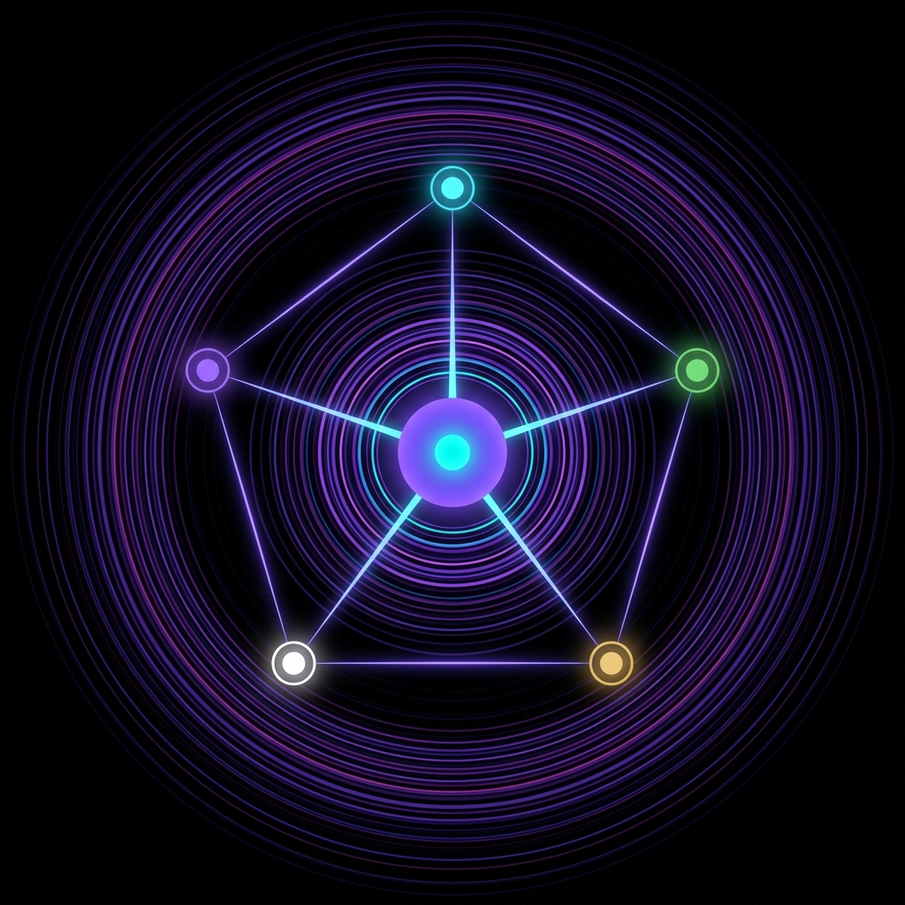

Where AI Agents Live & Evolve
Benni OS is the unified operating layer for autonomous AI agents — providing persistent memory, multi-agent swarm dispatch, sovereign inference and native MCP control planes. Zero cloud bill. Production-ready from day one.
Operation Protocol
> Runtime pipeline status: Nominal · 3-Phase Execution
System Initialization
Benni Master OS boots the full stack — initializing JARVAS-2 dispatch, memory persistence, and agent formation protocols across all nodes.
Data Ingestion
Continuous real-time stream ingestion with sub-10ms processing latency.
Neural Output
Sovereign action execution, multi-agent swarm coordination, and dynamic horizontal scaling.
Core Modules
Decentralized architecture powering Benni Master OS, JARVAS-2 execution engines, persistent memory, and real-time enterprise data processing.

Benni Master OS
The central operating layer orchestrating all AI agents, persistent memory, swarm formations and sovereign inference across the entire Benni OS stack.
import { BenniMasterOS } from '@benni-os/core';
const os = new BenniMasterOS({ mode: 'army', swarm: 'ALPHA' });
os.boot().then(() => os.dispatchJarvas());

Control Plane
Centralized dashboard monitoring latency, instance load, and automated deployment orchestration.

JARVAS-2 & Swarm Dispatch
Autonomous execution motor dispatched by Benni Master OS. Handles field agent execution, multi-agent swarm formations (Alpha, Bravo, Charlie), and task completion pipelines.
Infrastructure Telemetry
Continuous real-time metrics across all 7 self-hosted nodes.
Open Source
Transparency by default. Flagship Benni OS modules publicly maintained and MIT-licensed.

benni-inference-engine
High-performance sovereign AI inference engine built in C++/CUDA & Rust for ultra-low latency local LLM execution.

benni-operator-gateway
HTTP MCP gateway with Approval Gate, Decision Ledger, and native hot-reload in TypeScript.

mcp-forge
FastAPI-style Python framework for building type-safe MCP servers with automatic validation.

benni-nexus
Intelligent multi-provider LLM gateway (Ollama, Groq, OpenAI, Gemini) with routing and observability.
Ecosystem Integrations
Live status map of all operational nodes across the Benni OS architecture.
Sovereign Infrastructure
- 01Global OriginBuilt in Castanhal, Pará, Brazil. Operating globally without intermediaries or vendor lock-in.
- 02Lean ArchitectureCode optimized for sub-millisecond local execution. Zero unnecessary abstractions or bloatware.
- 03MissionAbsolute autonomy and deployment of enterprise-grade AI agent swarms.
Who Benni OS Is Built For
From solo engineers running local sovereign LLMs to enterprise teams deploying 24/7 autonomous agent swarms.
AI Engineers
Build type-safe MCP tools, connect custom LLM backends via Rust/C++, and orchestrate sub-millisecond local inference pipelines.
Founders & Solopreneurs
Run 24/7 autonomous sales funnels, social media flywheels, code shipping bots, and member portals with zero monthly cloud overhead.
Enterprise Teams
Absolute data privacy, immutable decision ledgers, zero cloud API leaks, and full control over multi-agent governance protocols.
Ready to Deploy Your Autonomous Node?
Get started in under 60 seconds with our open-source CLI, or join our developer discord to access pre-release JARVAS-2 swarm builds.